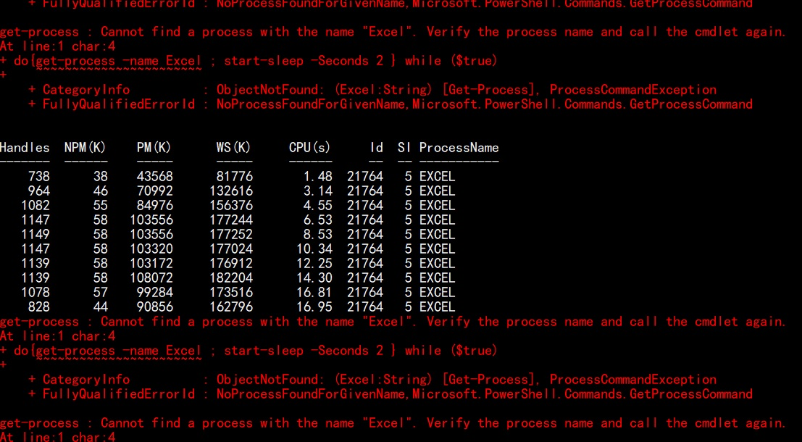

Job Scheduling (JP) Service M/Agent Request Manager
Update Time: 2019-02-22
Developer: Chen Mo
Author: Chen Mo
Development Introduction
This project aims to make a C# written tool exclusively for the Control-M Agent Requests and related innformation management.
user can rely on this tool to:
- Validate, Accept, Process Control-M Agent from Appli Side users.
- Manage, Export, View request ticket data, M/Agent information, System Information, and server information.
- Some other functions waiting to update.
Scope and Progress
The mile stone for completing the project and release as production should be when the tool can complete one cycle of most basic task:
To Accept an M/Agent Request, process it, sync information to Database (probably Access Database).
Later functions can be added into the early releases gradually.
Version 0.0.0.1
To test the new Form load speed on Shapes, make a test run: All Shapes top left corner cell mark as interior color green. Success! as shown on the right, all shape's top left cell are colorized as Red:
This means that it can fetch the data within a certain cell using LINQ.
Making of Shape Fetching method for Each Group
Input Object: Cell Range for a group of Check Box Items.
Output Object: A Range Object Value of the Check Box Checked.
Output Object: A dictionary with range as key and value as string.
Success! The process can now take a Range Value, and return a string value.
Some learning points:
C# cannot refer to COMS Object to test against another COMS Object. Even if they refer to the same COMS
C# still sees them as two different Objects, and won't trigger the if true statements.
If using the Used Range method, then the object cannot use a [cell1, cell2] structure to fetch the cell object in fixed value,
it has to be used like an iteration. But, the Worksheet.Range[] can be used like this, so there is really no need to
specify the used Range Object again, I'm going to do a specification mapping anyways.
Creating RequestSheet, RequestColumns, MAgent, and server Classes.
In This step, 4 classes are created, just like the hierarchy order of the information being processed.
A Little Thoughts on Development (2019-02-26 09:50:03)
Evidently, there is a need to make the procedure run faster.
Using COMS object (unmanaged memory) is so slow, that it almost doesn't make sense. (35 seconds+) The Current idea is much like the first time I'm writing this code.
What I need are two copies of informations from the sheet right away.
- Values in designated cells
- Values in Checkboxes
Different from the first time conundrum, I now know about a way to fetch "Address" (Such as "$H$37"), and link it to a value. Even Check Box Items can do that. Because I know how to use a dictionary Object.
The structure then becomes more simple, make a "load" method that takes an excel object, and "spew out" a Dictionary Object, which is to be used by all the entire procedure.
So the testing for the process run by using the
Do { Get-Process -Name Excel ; Start-Sleep -Seconds 2 } While ($true)
In Powershell.
And the result is:

It runs for about 17 seconds, almost the same as the debug log says.
And more importantly, it automatically ends the process without any hold up.
Major Bug: Form Area Dictionary uses Check Box Ranges
...which causes the program to abend with Key Already added. So the list needs to be splited, still. one formarea, one checkbox.